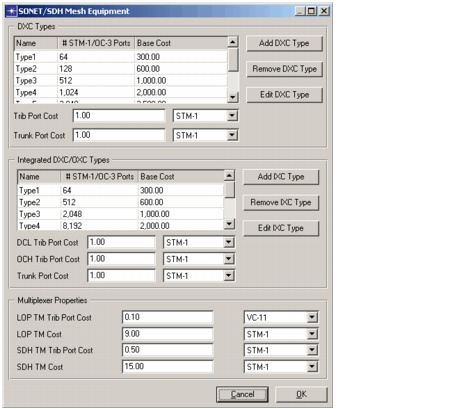
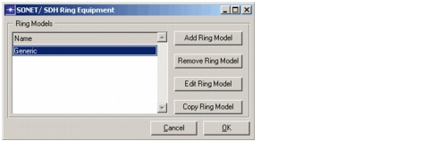
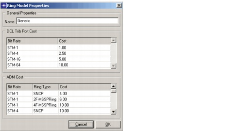
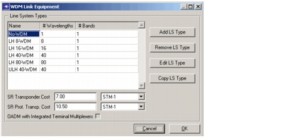
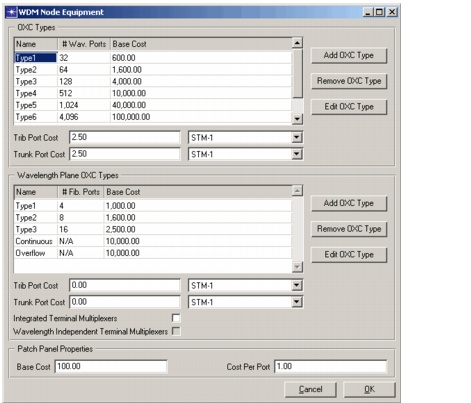
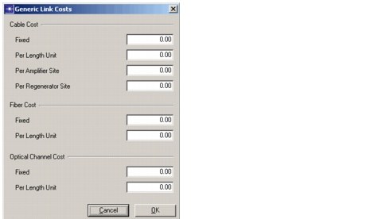
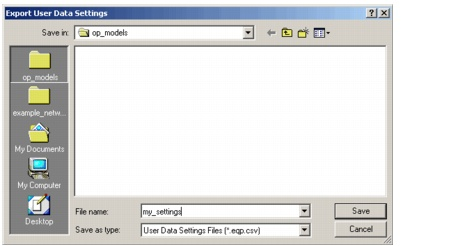

Introduction > Equipment Properties
Equipment Properties
SP Guru Transport Planner lets you specify the cost for the link and node equipment. You can do this using the dialog boxes, under Network > Equipment Properties, or by importing an equipment properties file. The equipment properties are divided into the following sections:
Procedure 1-5 Exploring Equipment Properties
- Open the WDMGuru_Examples project.
- Select File > Open....
- Select the WDMGuru_Examples project, then press Open.
The example project that contains several scenarios loads. The Australia scenario appears in the workspace.
- Examine the SONET/ SDH Mesh Equipment dialog box.
- Select Network > Equipment Properties > SONET/ SDH Mesh Equipment....

You can use this dialog box to specify which DXC and integrated DXC/OXC types are supported in your network and to specify the tributary and trunk port cost for each bit rate supported by this equipment.
This dialog box also specifies the SONET/SDH terminal multiplexer cost for each supported bit rate. To add a new DXC or integrated DXC/OXC type, use the corresponding Add buttons. Similarly, you can remove or edit each type by using the corresponding Remove or Edit buttons, respectively.
- Press Cancel to close the dialog box.
- Inspect the SONET/ SDH Ring Equipment dialog box.
- Select Network > Equipment Properties > SONET/ SDH Ring Equipment....
The SONET/SDH Ring Equipment dialog box appears. This dialog box enables you to create, edit, and delete different ring models.

- Verify that the Generic ring model is selected, then click Edit Ring Model.
- The Ring Model Properties dialog box appears.

This dialog box manages the properties of an individual ring model—specifically, the cost of SONET/SDH ADM equipment and SONET/ SDH ADM tributary cards for each distinct bit rate supported by your rings. Select any field under the Cost column to edit and enter new values.
- Close both dialog boxes by clicking Cancel.
- Examine the WDM Link Equipment dialog box.
- Select Network > Equipment Properties > WDM Link Equipment....

This dialog box manages the cost and properties for the WDM line systems supported in your network. Per line system type, the number of wavelengths and the number of bands is displayed. Use the Add LS Type, Remove LS Type and Edit LS Type buttons to manage the WDM line systems. You can also specify the short reach transponder cost (per OCH bit rate) and specify whether the OADMs in the network have integrated terminal multiplexers (only valid in transparent mode).
- Press Cancel to close the dialog box.
- Inspect the WDM Node Equipment dialog box.
- Select Network > Equipment Properties > WDM Node Equipment....

This dialog box manages the cost and properties for the (non-blocking or wavelength plane) OXC types supported in your network. Use the Add OXC Type, Remove OXC Type and Edit OXC Type buttons to manage the OXC types. Options concerning the wavelength plane OXCs can be specified here: whether they have integrated terminal multiplexers and whether their installed transponders are wavelength independent. In conclusion, the patch panel costs can be specified.
- Press Cancel to close the dialog box.
- Examine the Generic Link Costs dialog box.
- Select Network > Equipment Properties > Generic Link Costs....

This dialog box is divided according to the layers of the network. For each layer, you can specify fixed costs as well as cost as a function of link distance. For the cables in the OTS layer, you can specify additional costs per amplification or regeneration site. These costs are added to the equipment costs. Fiber and channel costs are only counted for lit fibers and channels, respectively.
- Press Cancel to close the dialog box.
- Save and load the data settings to and from a file:
- Select File > Export > User Data Settings to save a set of data settings to a file. These settings consist of the equipment properties, the availability settings, and the delay settings.

After you save a User Data Settings file, you can import this data into another scenario by choosing File > Import > User Data Settings . These export/import operations allow you to easily transfer cost models among scenarios.
NOTE—You cannot import a User Data Settings file if the network already has equipment installed.
NOTE—Cost settings are maintained on a per-scenario basis, not on a per-project basis.
- Save and load the default data settings to and from a file:
When you create a new scenario, a default set of data settings is installed. To specify what these default settings should be, edit the current settings in all of the appropriate dialog boxes, then use File > Export > Save Default User Settings.
To load these properties into any scenario use File > Import > Load Default User Settings.
- Close the project.
End of Procedure 1-5
Note—See the SP Guru Transport Planner User Guide section on Concepts and Models for a detailed description of the cost model and equipment types supported in SP Guru Transport Planner.
| Home © 1987-2007 OPNET Technologies, Inc. All Rights Reserved. This software may be covered by one or more U.S. Patents. See complete patent notice in the Legal Notices section. OPNET Support Center |